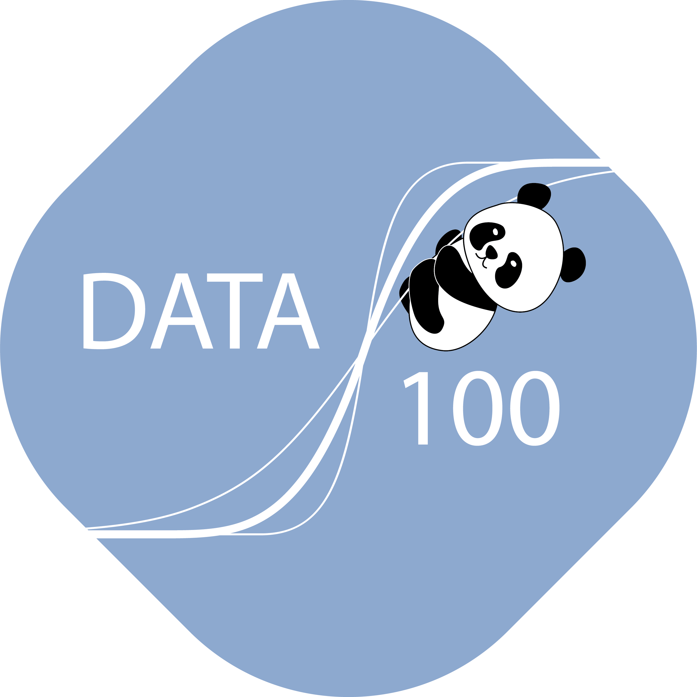

Early Passion for Nature
I grew up in upstate New York, close to the Hudson River, where I was deeply involved in environmentalism. Being surrounded by nature gave me countless opportunities to explore the environment, and looking back, I realize I was also encountering data science problems that I didn’t yet know how to handle.

Discovering Data Science
I joined the Seed Scholars Honors Program at UC Berkeley, a community for minoritized individuals in STEM, which gave me the chance to start early. That summer, I took Data 6, an introduction to data science, where I learned to code for the first time. I quickly realized the power of data and became deeply interested in how it could shape the world.


Teaching and Research
I wanted to give back the same excitement that Data 6, Data 8, and Data 100 had given me, so I became a tutor and eventually a teaching assistant. Through my role as a TA for Data 100, I started research with Professor Narges Norouzi, which led to building Askademia, an AI system for student support. Our work won Best Paper at AIED.

Exploring AI and Industry
Through this research, I discovered my interest in AI agents, which eventually led me to an internship at Autodesk as a Machine Learning Engineer. At Autodesk, I worked on ML agent systems that supported real teams and had a tangible impact. It was a fantastic experience that grew my passion for applied AI.

Beyond Engineering
At Berkeley, I also explored opportunities outside of engineering. During my sophomore year, I joined a nonprofit consulting club where I contributed to impactful projects. Music has always been a personal passion—I grew up playing the trumpet—and I had the chance to collaborate with nonprofit music organizations, blending creativity and service.

Where I Am Now
Currently, I’m studying abroad in Italy, taking art classes while applying to jobs and exploring new opportunities. This chapter is about growth, creativity, and preparing for what comes next. I’m excited to see where life after college will take me!